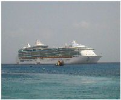

Freedom is packed with spectacular features: the FlowRider surf park, canitilevered whirlpools, ice-skating rink, full size boxing ring, H2O Zone waterpark and more!
The ship has 30 lifeboats.
It is about 229 ft (69.80 m) longer, about 108.000 GT larger, and can accommodate 2,147 more passengers than RMS Titanic.
It has 75,000 lightbulbs and 4,700 works of art, and uses 35,000 kg of ice daily. The largest suite, the presedential Suite, is 113 square meters, accommodates 14 people and has ten flat panel TV's, a private whirlpool, a wet bar, and a Yamaha GC1 baby-grand piano.
Rooms for the malden voyage were priced from $1,900 to $22,000 for the week.
It consumes approximately 28,0000 pounds (12,800 kg) of fuel per hour, enough to refill a 13 gallon tank in a car at one tank a week for over six years.
It is one of the few ships with 8 bow thrusters in total.
|